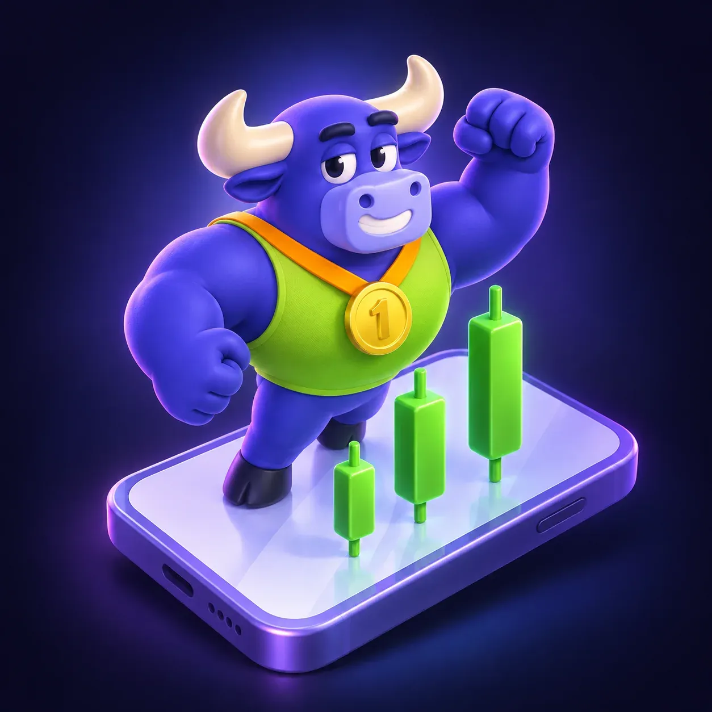

AI Chart Analyzer
Get a structured view of price behavior, volatility, trends, key price levels, analyst sentiment and news for a supported asset and timeframe.
The AI Trader Challenge is built for learners who want to understand active trading and read short- to medium-term market movements with AI as their analytical partner.

Across 28 days, you learn chart reading, AI market analysis, preset strategy logic, risk management, emotional discipline, and simulator practice.
Finelo AI is educational.
Learn how markets work, how to read charts and identify price levels, and how to use AI market analysis while keeping human review at the center of each decision.
Practice applying risk management before, during and after a trade, and learn to recognize fear, FOMO and overconfidence.
Get a structured view of price behavior, volatility, trends, key price levels, analyst sentiment and news for a supported asset and timeframe.
Study common chart patterns and learn how similar structures have resolved historically.
Explore trading concepts and market events through plain-language explanations.
Every Finelo challenge is built around the same learning loop:
28 days. Three AI tools. Preset strategy bots to study.
Start the AI Trader ChallengeA long-term path for portfolio construction and AI-assisted research.
Learn more →Explore Finelo AI tools, bots and challenges.
Learn more →A classic path for active trading decisions and risk management.
Learn more →Finelo is an educational product. The simulator uses virtual funds and market data so you can practice without placing real trades.
A 28-day learning program on active trading concepts, chart reading, AI-assisted analysis, and simulator practice.
AI Chart Analyzer, Smart Pattern Finder, and AI Mentor.
They demonstrate preset strategy logic and risk guardrails. Explore the bot presets →
Practice reading charts with AI as a learning partner. The final decision stays with you.
Start the AI Trader ChallengeFinelo is an educational product. Simulator practice uses virtual funds.